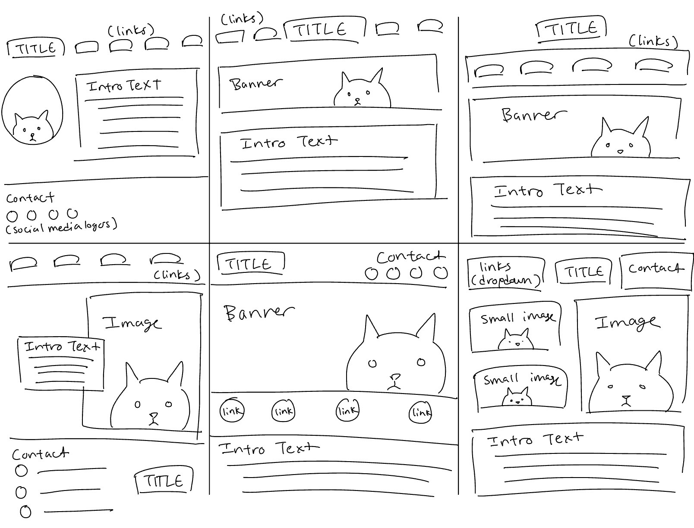
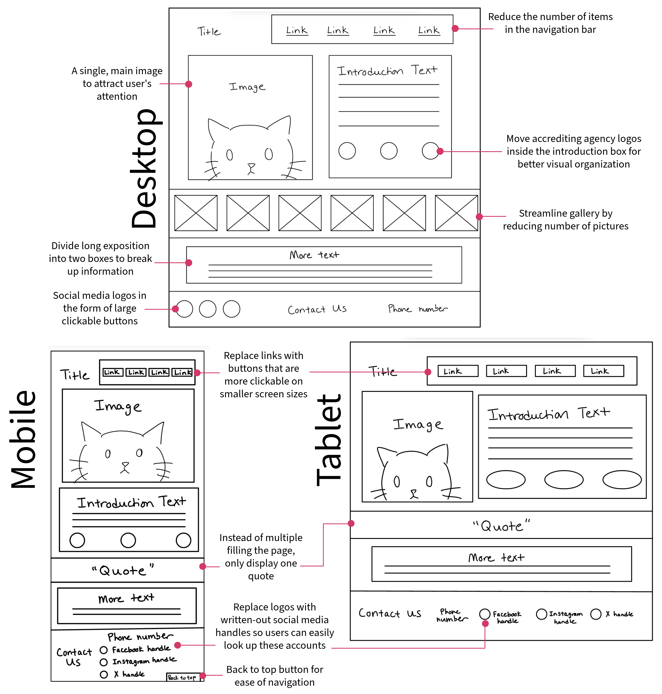
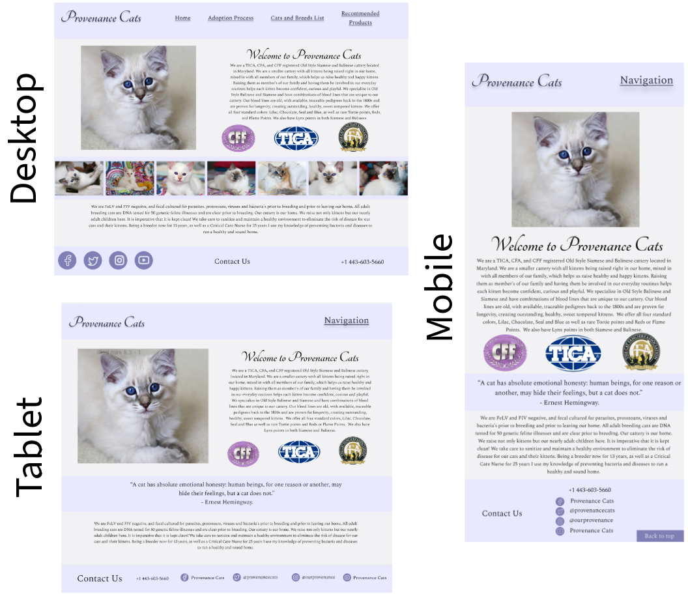

Brief
I decided to undertake the project of creating a comprehensive redesign of the homepage for a private cat breeding business. This project has a special place in my heart because I've always loved cats, especially since I fostered kittens for the local Humane Society for over 4 years and am familiar with the pain of parting with an animal you've grown to love.
Problem Overview
To begin, I identified a few pain points in the original site that I wanted to improve upon in my redesign. I found that the original site's organization was rather cluttered and overwhelming, with the decorative background and color scheme providing poor contrast (among other issues).

Visual Redesign
⟡ Part I: Sketching and Brainstorming
With this in mind, I started the process of sketching, spending about a minute on each one.
From these brainstormed ideas, I synthesized a few elements I wanted to include in my final redesign. Namely:
- A single, main image on the page that could attract attention
- Shortening the the introduction text amd moving it to the right of the main image
- Maintaining the top navigation bar but trimming down the number of links, and adding a bottom bar to hold contact information
- Using a decorative element to break up the information, either a gallery (desktop) or a quote (tablet/mobile)
⟡ Part II: Wireframing
I began with making lo-fi wireframes for three screen sizes: for desktop, tablet, and mobile.
As you can see, I streamlined the desktop design by removing the automatic music player and condensing the number of links.
I planned to do this thoughtfully by combining related pages and using dropdowns to group related information,
and attempted to retain the quality of information presented by the site.
The mobile and tablet redesigns are more similar in nature, both featuring a dropdown instead of a traditional navigation bar for ease of tapping with fingers (which are less precise than a mouse).
⟡ Part III: Visual style guide
Then, I created a style guide on Figma to ensure consistency before I start on finalizing the designs. I brainstormed a color scheme, decided on icons for social media links, and standardized text sizes and fonts. I also finalized button and link hover behavior.
⟡ Part IV: High-Fidelity Prototyping
With these designs, I returned to Figma to create three hi-fi prototypes.
In both the tablet and mobile designs, the navigation bar is a dropdown instead of a series of links. This is to faciliate easier navigation on smaller screen sizes by offering larger buttons for users to press.
Implementation and Takeaways
As the final step, I implemented my design using HTML and CSS. The link to my final redesigned page is here, and the Github repository is here.
This was one of the first front-to-back, responsive projects I have ever worked on, and I learned a lot about both design principles and HTML/CSS.
Through this experience, I feel much more prepared to tackle real-world problems through design and front-end engineering.